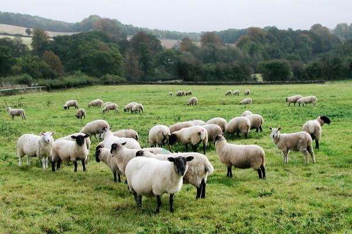
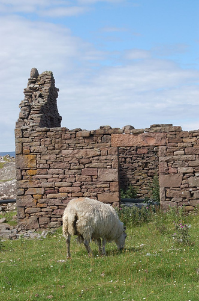

The Change
Le Changement
No author known
Tune - MélodieNo tune known, replaced here by "Murt Ghlinne-Cumhainn"

|
To the text:
"The transition from the high hopes of the Jacobites during the early part of the 45 to the despair and desolation that followed the battle of Culloden is dramatically rendered in this graceful poem. The short stay of the Prince in Edinburgh was marked by much light revelry, that might have been prudently dispensed with and the blue blades, bonnet gear and plaids lightly dancing , were not without justice cited afterwards as a reproach to him when they were contrasted with the melancholy results of a lost cause and the effects of the Duke of Cumberland's wrath: Hearths in the wind bleached bare..." Source: G.S. Macquoid's "The Jacobite Songs and Ballads", 1888. A strange use is made of this poem at the site "Candle Magic": as part of a "candleburning ritual", it is a spell to be said quietly, while moving about white and black candles and lighting incense, with a view to getting rid of bad habits! |
A propos du texte:
"Les grandes espérances des Jacobites au début du soulèvement de 1745 ont fait place au désespoir et à la désolation après la bataille de Culloden. C'est ce contraste brutal que met en lumière ce gracieux poème." Le court séjour du Prince à Edimbourg avait été marqué par d'éclatantes festivités, dont il aurait été prudent de se dispenser et les épées qui brillaient et les plaids qui dansaient ne furent pas reprochés sans raison après coup, en les comparant aux résultats funestes d'une cause perdue d'avance et aux effets de la colère forcenée de Cumberland: Des foyers calcinés et des toits effondrés . Source: "The Jacobite Songs and Ballads" collectés par G.S. Macquoid, 1888. Un étrange usage est fait de ce poème sur le site "Candle Magic": il fait partie d"un "rite magique aux bougies", en tant que formule à réciter lentement, tout en déplaçant des bougies et en brûlant de l'encens. On peut ainsi se débarrasser d'une mauvaise habitude fâcheuse! |

|
THE CHANGE
1. "Star of the twilight grey, Where wast thou blinking? When in the olden day, Eve dim was sinking? 'O'er knight and baron's hall, Turret, and tower, O'er fell and forest tall, Green brake and bower.'"
2. "Star of the silver eve,
3. "Star of the maiden's dream,
4. "Star of the even still,
|
LE CHANGEMENT
1. - O vacillante étoile, Que l'on voit briller au couchant, Dis, dans la nuit sans voile, Que voyait-on aux jours d'antan? - Une noble assemblée Au pied des tours et des créneaux, Monts et hautes fûtaies, Vertes fougères et hameaux 2. - Belle étoile argentée, Du couchant, dis-moi donc encor, Cette belle assemblée, Que faisait-elle en ce décor? - Bonnets et bleues épées, Et plaids de tartan dansaient gaiement, Des cerfs dans la ramée Cachaient leurs bois timidement. 3. - Etoile qui scintilles, Que voit-on entre chien et loup, Lorsque rêvent les filles, Et que voltigent les hibous? - Aux murailles si fières La mousse verte partout qui croît. La rosée semble amère, Depuis que sont rasés les bois. 4. - Etoile, au crépuscule, Dis-moi, que s'offre à ton regard, Quand se lève la lune Sur le mont désert, le soir? - Toitures effondrées; Âtres où le vent s'en vient hurler. Plus de cerfs, de ramées; Partout des moutons par milliers. (Trad. Christian Souchon (c) 2010) |
